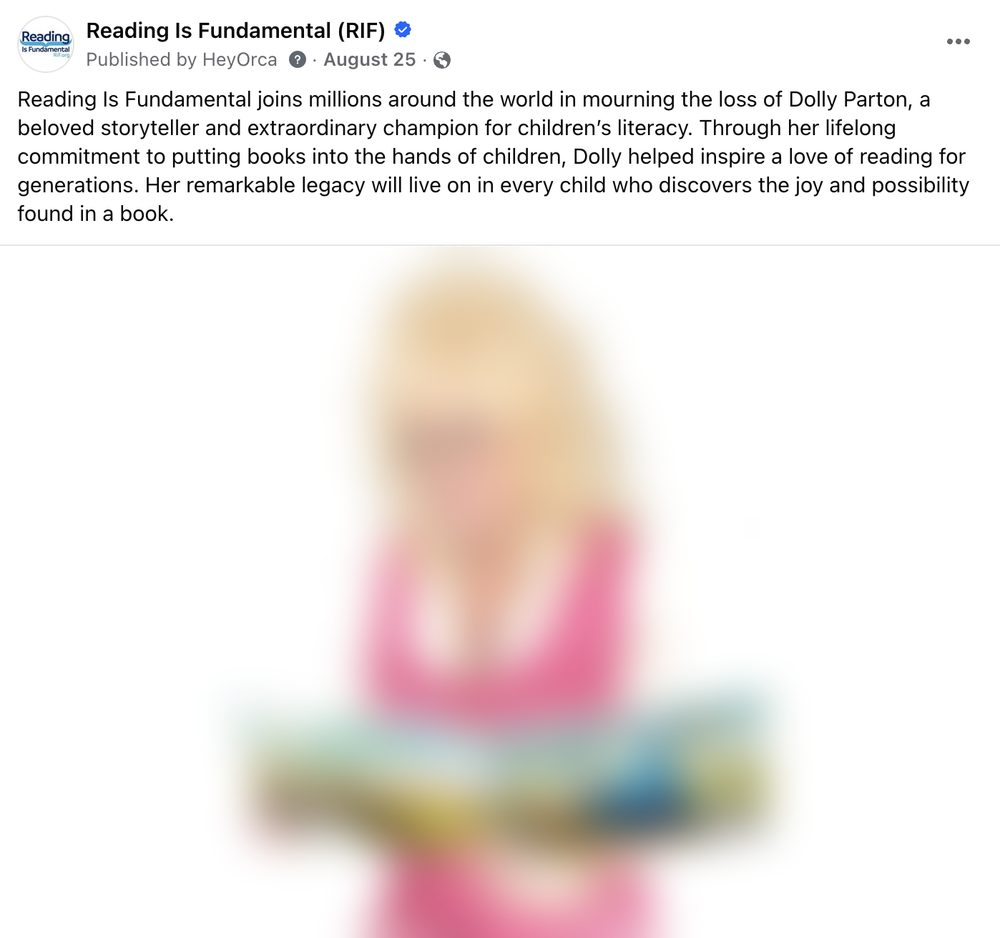

The Community Mom
Shares what helps her kids with every parent she knows. Acts on free, low-barrier offers.
4×more clicks than reactionsI built a three-pillar social strategy tied to business goals, created six audience personas from real platform data, and led a six-month performance review that rebuilt the content calendar. The next quarter grew on every headline number.
views and impressions across five channels, up 150%
engagements, from 34.5K to 72.6K
new followers and subscribers, 4,262 in one quarter
daily TikTok engagement after the review
July to September 2026 compared with April to June. Facebook views include paid views in both quarters; Instagram follower growth includes a separate paid fundraising campaign.
Reading Is Fundamental runs social channels for more than 180,000 followers across Facebook, Instagram, LinkedIn, TikTok, YouTube, X, and Pinterest, with a small team.
Posting was steady, but it wasn't a system. Content was planned for everyone at once, channels weren't tied to business goals, and some of the organization's most important asks, like fundraising and the Skybrary app, consistently underperformed. Leadership wanted social to support demand, conversion, and loyalty, and to show it.
I built RIF's 2026 social strategy around three content pillars, each mapped to a business goal, an audience, and its own success metrics. A fixed monthly mix keeps the calendar from over-asking or under-nurturing.
Shareable content that introduces RIF and makes the case for reading. Entertains, inspires, or interrupts.
Clickable posts with one clear next step, limited to 2–3 priority actions a month.
Community stories and behind-the-scenes posts that build advocates.
Each platform got a recurring weekly series mapped to a pillar, so the team reuses a format instead of starting from a blank page every day. AI tools help with first drafts and repurposing; people review everything for RIF's voice.
I built a persona for each platform from real data: platform analytics, follower bio analysis, and content performance through March 2026. Each one tells the team what that audience wants and how to speak to them.
Shares what helps her kids with every parent she knows. Acts on free, low-barrier offers.
4×more clicks than reactionsA teacher or librarian who treats her feed as a resource library and saves tip carousels for later.
34%share-to-like ratioFunds, shapes, or runs education programs. Forwards impact data to his team.
9.25%engagement rateA school librarian with her own following. Prefers lo-fi, authentic video and could become an ambassador.
7.27%engagement rateA writer or educator who amplifies surprising stats and organizations doing real work.
18%of the audience are writers and authorsSearches with purpose and plans activities 30–45 days ahead. Finds RIF through the right keywords.
9.97×childcare interest vs. the average userOn July 23, 2026, I led the social team through a review of six months of performance, post by post and platform by platform, sorted by pillar. We named what to keep doing and what to stop or rework.
| Platform | What worked | What didn't |
|---|---|---|
| Nostalgia photos, reading tips, helpful book lists | Fundraising asks, app feature posts | |
| Saveable tip carousels, anniversary video | Product posts, corporate interviews | |
| Blog shares, event recaps, government affairs | Event promos, quote graphics | |
| TikTok | Real people on camera, staff trends | Produced, polished video |
| YouTube | Short, single-concept teaching | Long-form generic uploads |
The pattern was consistent. Content that was useful, authentic, or nostalgic won. Content that led with an ask lost. The team changed the calendar the same week:
Average engagements per day, before and after the review.
| Platform | July 1–22 | July 24–Sept 30 | Change |
|---|---|---|---|
| 210 | 482 | 2.3× | |
| 46 | 90 | 2.0× | |
| 9 | 16 | 1.9× | |
| TikTok | 6 | 168 | 27× |
Engagements per day from platform exports. The after period excludes August 25–27 on every platform, so one viral post doesn't inflate the result.
Facebook organic views, while paid views fell by half. Reach was earned, not bought.
Instagram views, from 127K to 388K, led by shareable reading facts
of YouTube views came from videos published that quarter, up from 47%



I wrote the 2026 social strategy, built the six audience personas, led the six-month review, and turned its findings into the new calendar. I also built the quarterly reporting that tracks results against each pillar's metrics.
Social performs best when it runs as a system. Clear goals, a real picture of each audience, and a regular habit of checking the data let a small team grow faster than more posting ever would.